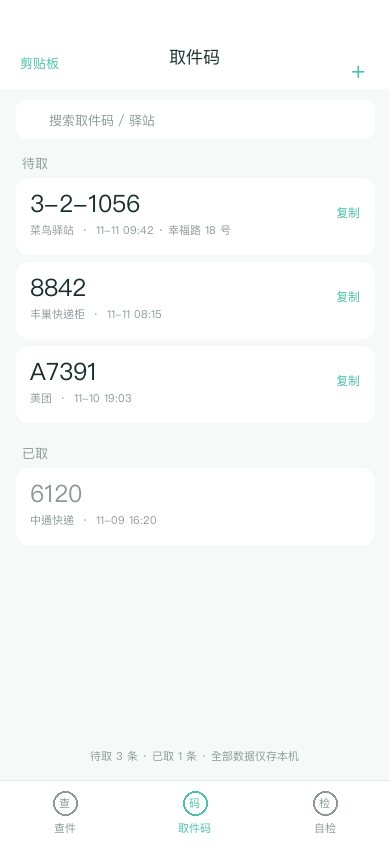

取件快码 Assit · 隐根
1.0 抓码清单 + 2.0 查件面板 · 合并版 v3.0.0 · AssitDev

iphoneos-arm64e，包内无 /var/jb 前缀）。无根 rootless 用户请改装标准包「取件快码 Assit」；两包互斥。这一版做了两件事
① 把 1.0 和 2.0 合到一起。 2.0 按你给的截图做了「三个身份码 + 六个查件入口」；1.0 做的是「通知里自动抓出取件码、收进清单」。 两套都有用，v3.0.0 合成一个包：桌面 App 三个 Tab —— 查件、取件码、自检。
取件码支持按驿站归类去重、点一下复制、左滑标记已取 / 删除、搜索、手动添加、剪贴板识别； 新码到达时有顶部横幅。数据只写本机 plist，不联网、不上传。
② 修桌面图标。 2.0 的安装脚本只跑了 uicache -p 单个路径，
在 Dopamine 上经常不足以重建 rootless App 的注册；官方的修复动作是 uicache -a 全量刷新
（Dopamine → 设置 → 操作 →「刷新越狱应用」）。v3.0.0 两种都跑，还补全了 App 的
CFBundleSupportedPlatforms 等注册元数据，并把每一步结果写进安装日志 ——
App 的「自检」Tab 能直接看到，不用再猜。



查件 Tab / 取件码 Tab / 设置页（示意图，非原帖素材）
三个入口，互不依赖
- 桌面 App（主入口）：
QujianKuaiMa.app，绿色「码」图标，三个 Tab。不依赖插件注入。 - SpringBoard 悬浮球：点一下直接展开内置面板（待取取件码 + 九个查件入口）， 不再需要先唤起桌面 App。所以就算图标没注册成功，插件功能照样能用。
- iOS「设置」里的插件页：开关悬浮球 / 自动抓码 / 横幅、保留天数、自定义关键词、九个入口链接。
三处共享同一份偏好与同一份取件码数据，改动通过 Darwin 通知即时同步。
怎么用
- Sileo 刷新源 → 升级到 3.0.0。安装脚本自动执行
uicache -a、uicache -p、刷新偏好并 Respring。 - 桌面出现绿色「码」图标，点开就是合并后的界面。
- 收到含取件码的通知 → 自动进「取件码」Tab；也可以手动添加或粘贴识别。
- 点查件入口直达对应 App；「设置」里可改成完整深链。
桌面图标还是没出现？
先确认包升级成功：Sileo 已安装里搜「取件快码」，版本应为 3.0.0，包名 com.assitdev.qujiankuaima.roothide。
再刷新注册：Dopamine → 设置 → 操作 →「刷新越狱应用」，然后「重启 SpringBoard」。
这是 rootless 图标消失时官方给的动作，等价于 uicache -a。
终端手动执行（root）：uicache -a && killall -9 SpringBoard。
App 的「自检」Tab 右上角可以一键复制这条命令。
看日志：如果能打开 App，切到「自检」Tab，里面显示安装脚本每一步的返回码；
显示 uicache NOT FOUND 就说明环境里找不到 uicache，需手动刷新。
就算图标始终不出现：悬浮球面板（需 ElleKit 注入开启）与 iOS 设置页仍然可用； 取件码清单也可以在悬浮球面板里查看和复制。这一版刻意不再把功能全押在「图标能不能显示」上。
关于跳转链接
默认填的是各 App 的 URL Scheme（打开首页）：taobao://、pinduoduo://、
openapp.jdmobile://、snssdk1128://、kwai://、dewu://。
各厂商「身份码 / 待取包裹」页的深链路径不公开、也会随版本变，设置里允许填完整链接；填了就直达。
未安装对应 App 或链接失效时，提供「复制链接 / 打开网页版」兜底。
兼容性
- 隐根 roothide（Dopamine-RootHide）：本包，架构
iphoneos-arm64e，原生构建。 - 无根 rootless：请改装标准包
取件快码 Assit。 - iOS 15+；两个包互斥，只装对应环境的那一个。
隐私与声明
全部功能在本机完成，不采集、不上传任何数据；界面与图标均为重绘，未使用原帖素材。 本插件为个人学习研究产物，仅供自己设备使用，请勿用于商业用途。